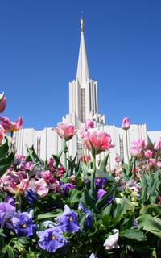

Temples of the Church of Jesus Christ of Latter-Day Saints

1 Jordan River Temple2 Jordan River Temple3 Jordan River Temple4 Jordan River Temple5 Jordan River Temple6 Jordan River Temple7 Jordan River Temple8 Jordan River Temple9 Jordan River Temple